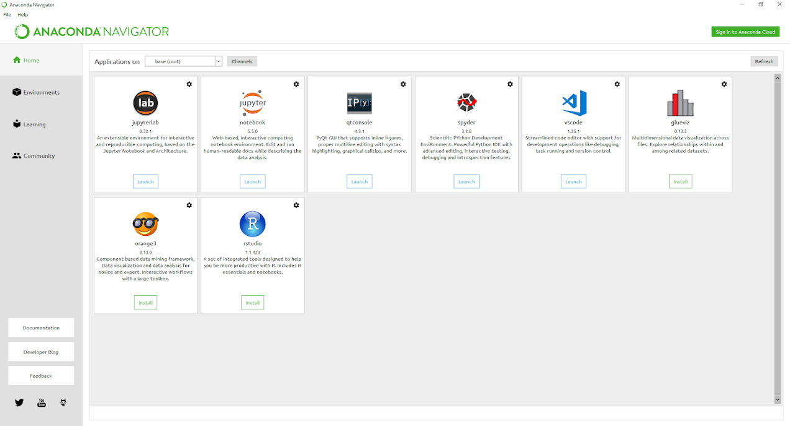

3.0Python là ngôn ngữ phổ biến nhất cho Machine Learning nói chung và Data Science nói riêng bởi tính đơn giản gọn nhẹ của nó
1.1 Anaconda
Có nhiều cách để cài đặt và sử dụng Python, trong đó đơn giản nhất chúng ta có thể đi tới trực tiếp trang https://www.python.org/downloads/ để download cho Windows (hoặc Mac), tuy nhiên cách tiếp cận tốt hơn là sử dụng Platform Anaconda, đây là 1 Platform khá nổi tiếng trong Data Science, khi cài Anaconda ta sẽ có: - Python core - Các libraries phổ biến nhất (VD: pandas, numpy, matplotlib…) mà không cần phải cài mới mỗi khi cần sử dụng - Các IDE phổ biến nhất để sử dụng Python (Jupyter Notebook, Spyder) và R (Rstudio)
Để cài đặt Anacoda, đi đến trang https://www.anaconda.com/distribution/, chọn phiên bản Windows, download và install

1.2 Library trong Python
Tương tự như R, các library trong Python rất đa dạng và hỗ trợ giải quyết nhiều vấn đề khác nhau.
Các thư viện thường dùng trong Python khi phân tích dữ liệu:
- Numpy: Tính toán đại số
- Scipy: Tính toán các chỉ số khoa học
- Matplotlib, seaborn: Vẽ biểu đồ
- Pandas: Tương ứng với data.table, dplyr, reshape2
- Scikit Learn: Machine learning
1.2.1 Cài đặt library trong Python
Phần lớn các library đều đã được cài đặt cùng với Anaconda, các library khác khi cần chúng ta có thể cài bằng pip.
VD, sử dụng Jupyter Notebook console
!pip install seaborn
Hoặc sử dụng terminal
pip install seaborn #cài bằng pip
conda install seaborn # cài bằng anaconda
Phân biệt Modules/packages/Libraries: Khi làm việc với Python, ta sẽ thấy có 3 nhóm thuật ngữ sau - Function: Một hàm được người dùng tạo ra - Module: đơn giản là 1 file .py chứa 1 hoặc nhiều function/class nhằm mục đích tái sử dụng sau này, một module có thể chứa nhiều hàm - Package: đường dẫn đến thư mục chứa: - Nhiều Python module. - 1 file đặc biệt là __init.py__
VD: Python package trong windows thường được chứa tại C:\Users\anhnt67\AppData\Local\Continuum\anaconda3\Lib\site-packages - Library: ở Python, library và package được dùng thay thế lẫn nhau
Import Modules/packages
1.2.2 Cài đặt packages khi bị chặn proxy
Cài đặt với conda
- Download package từ trang web: https://anaconda.org
- Cài đặt với câu lệnh sau
conda install --offline jupyter_contrib_core-0.3.3-py36_1.tar.bz2
Cài đặt với pip
- Clone folder từ github
- Mở terminal/cmd trong thư mục chưa project
- Thực hiện câu lệnh sau:
pip install -e nbextensions
1.2.3 Kiểm tra thư viện Python
['C:\\Users\\Hoang Duc Anh\\anaconda3',
'C:\\Users\\Hoang Duc Anh\\anaconda3\\lib\\site-packages']- Ta có thể copy thư viện Python như làm việc với R
1.2.4 Một số câu lệnh cơ bản
1.3 Jupyter Notebook
Jupyter Notebook là IDE phổ biến nhất cho Python, Jupyter Notebook sử dụng browser-based interface, cho phép chúng ta hiển thị code, hình ảnh, bảng biểu… và viết note bằng Markdown - tương tự như RMarkdown
Khi Anaconda được cài, chúng ta có thể truy cập trực tiếp vào Jupyter Notebook từ Anaconda, hoặc có thể vào cmd, gõ jupyter notebook và Enter
- Quay về edit mode:
Esc - Hiển thị các phím tắt:
Ctrl + Shift + P - Insert cell phía trên/ dưới:
Esc + A,Esc + B - Chạy code:
Ctrl + Enter - Chạy code & chuyển xuống cell dưới:
Shift + Enter - Chuyển sang markdown, heading, raw:
Esc + 1,Esc + 2,Esc + M,Esc + R - Chuyển về code:
Esc + Y - Cut code:
Esc + X - Comment/Uncomment:
Ctrl + / - Chạy code & Insert below:
Alt + Enter Shift + Enter: run cell, move xuống dưới 1 dòngAlt + Enter: run cell, insert 1 dòng phía dướiUp/ Down: di chuyển lên xuốngEnter: edit 1 cellEsc D+D: xóa 1 cell (nhớ tắt tiếng Việt)Esc + Z: undoEsc + S: saveCtrl + Shift + -: Tách 1 cell thành 2 cell từ vị trí đặt con trỏ
1.3.1 Cách hiển thị biểu đồ trong jupyer
Sử dụng option %matplotlib inline với jupyter
1.3.2 Magic commands
Trong Python có nhóm các câu lệnh được define sẵn được gọi là magic command. Các câu lệnh này cho phép thực hiện nhanh các nhóm lệnh khác.
Các magic command thường dùng
1.3.3 Viết công thức toán
Ta có thể viết công thức toán như rmarkdown thông thường.
\[\theta = \sum_{i=1}^{n}X_{i}\]
1.3.4 Cài đặt extension cho phép quản lý jupyter tốt hơn
conda install -c conda-forge jupyter_contrib_nbextensions jupyter_nbextensions_configurator
- Vào Nbextension
- Chọn options table of contents
- Chọn các parameters
Cài đặt khi bị chặn proxy:
- Làm theo hướng dẫn tại https://github.com/ipython-contrib/jupyter_contrib_nbextensions
1.3.5 Thay đổi working directory
- Khi cài đặt Anaconda, lưu ý chọn option cho phép cài đặt PATH vào environment như hướng dẫn tại link
- Nếu quên không cài, cần thực hiện câu lệnh sau trên CMD
SETX PATH "%PATH%;C:\Users\Admin\Anaconda3\Scripts; C:\Users\Admin\Anaconda3"
- Sau đó, đặt file .bat tại thư mục chứa các notebook đang lưu, thực hiện như sau:
rem dir jupyter notebook
1.3.6 Các lưu ý khác
1.3.6.1 Xuống dòng trong code: Sử dụng dấu \ và không có dấu cách sau đấy
1.3.6.3 Docs string: Cho phép hiển thị các thông tin trong docs
1.3.6.4 Help trong python
- Sử dụng tab để tự động điền các hàm hoặc khi import thư viện
Ví dụ: np.TAB
from sklearn import da<TAB>
1.3.6.5 Chạy external code trên notebook
1.3.6.6 Hiển thị code đã chạy
Jupyter notebook cho phép hiển thị các đoạn cell đã chạy trong cùng notebook
1.3.6.7 Làm việc với shell
Python cho phép làm việc với shell trong Python
lsĐể gán kết quả từ shell, sử dụng toán tử !
my_content = !ls
len(my_content)1.3.6.8 Kiểm tra thời gian chạy code
1.4 Jupyter lab
Jupyter lab là phiên bản tiếp theo của jupyter notebook. Jupyter lab cho phép làm việc thuận tiện hơn với các extension và IDE thân thiện với người dùng.
Cài đặt jupyter lab:
Cài đặt nodejs:
conda install -c conda-forge jodejs. Hoặc có thể download nodejs trực tiếp và cài đặt như bình thườngCài đặt jupyterlab
conda install -c conda-forge jupyterlabCài đặt jupyterlab extension
- jupytelab toc: `jupyter labextension install @jupyterlab/toc` - Variable inspector: `jupyter labextension install @lckr/jupyterlab_variableinspector`Ngoài ra, có thể cài thêm các extension khác như:
code-formatter
Lưu ý: Trong trường hợp cài đặt extension bị chặn proxy cần phải mở proxy như sau:
1.5 Sphinx
Mặc dù jupyter notebook là công cụ hữu hiệu để phân tích dữ liệu với Python, jupyter lại chưa phải là công cụ hữu hiệu để viết lại các document thành hệ thống. Để viết hiệu quả, ta cần dùng sphinx
Sau khi cài đặt xong, ta có thể tạo project sphinx như sau
Các file notebook cần được liệt kê trong file index.rst
Sau khi set-up xong, toàn ta có thể run toàn bộ project như sau
1.6 Tài liệu tham khảo
- https://www.dataquest.io/blog/jupyter-notebook-tips-tricks-shortcuts/
- https://jupyterlab.readthedocs.io/en/stable/getting_started/installation.html
- https://nbsphinx.readthedocs.io/en/0.4.2/installation.html
- https://sphinx-rtd-theme.readthedocs.io/en/stable/installing.html
1.3.6.2 Comment với dấu